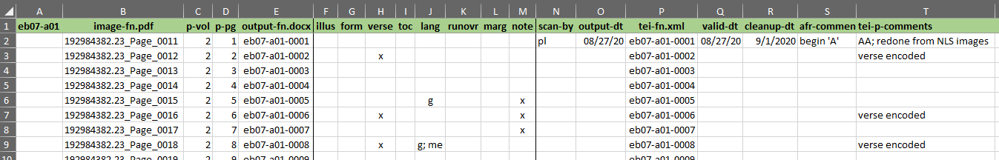

Document the file names on each section in the inventory file.
About this task
The Nineteenth-Century Knowledge Project contains tens of thousands of individual
files, including page images, OCR-Project files, HTML output files, derivative TEI
files, and more. It is a multiyear project involving many researchers over time. In
addition to a careful scheme of data organization, we maintain careful records of
what was done and when. This ensures that nothing is lost when we transition between
researchers.
Note: Accuracy in matching filenames is critical. We use image
file names in the inventory to generate metadata in the final
files.
Procedure
Open an existing spreadsheet and save it as edition-section
(ebnn-snn) in the home directory for the new section. Delete all data, leaving only the column labels.
Figure: Inventory spreadsheet file
Open the new ebnn-snn file. Open the home directory for
the section folder in production/images,
containing the original images used for the OCR scan. All files in the directory
should have the same name and number at the end, incrementing by one number.
Make a note of the total number of image files
Copy the name of the first image into the image-fn
column, without the extension. Append the file extension (.tiff, .jp2) to
the column label, instead.
Figure: Columns for inventory spreadsheet

Copy the same file name into the second row and increment it by one. Select the
two filenames. Position your cursor over the bottom-right corner of the
selection. When the cursor changes to a + sign,
left-click and drag down the column. Excel will populate the rest
of the image-fn column for you.
You should now have a column with the same number of filenames that you
noted in the production/imagessection folder. Make sure the name of the last file in the
image-fn column matches that of the image
folder.
Enter the print volume number in the p-vol column.
Enter the print page number for each image in the p-pg
column, using the same technique as above to auto-populate the column.
Be sure to account for unnumbered pages, such as plates, even if they
were not scanned and output. This gives us a guide to every image file in the
section.
In the output-fn.htm column, enter the filename for each
HTML file in the output, corresponding to the image
filename in the image-fn column.
This may take some time. ABBYY FineReader may miss a page, or it
may add a blank page. Take you time. If in doubt, always consult the original
page images to make sure the text in the HTML file represents
the text in the corresponding image file.
Add the initials for the person drawing boxes on each page in column E,
scan-by. If one person did the entire section, you
only need to enter it once.
Add the date the HTML files were output in the
output-date column.
The well-formed column indicates when the HTML files are validated, as part of the quality-control
process.
The tei-fn.xml column lists the file names for the TEI files, after the HTML files are
transformed.
The final column, comments, is for recording page
anomalies. Use this column to note any pages with Hebrew-language text, footnote
text that runs over from one page to another, notes in the page margin, or any
other information we will need to know for later in the production
process.